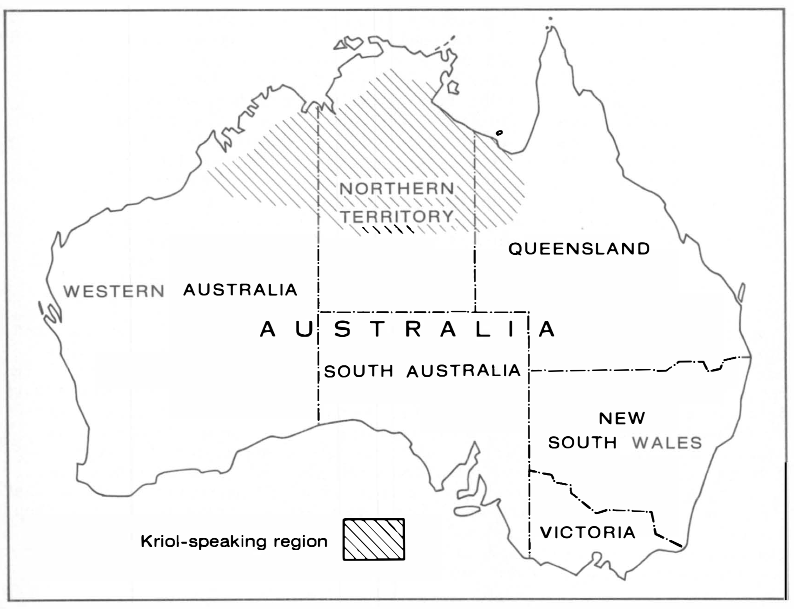

Kriol is an English-lexified creole language that originated in Northern Australia circa 1908, developed by the Indigenous Australian minority. With over 20,000 active language users, at least 10,000 of whom speak it as their primary language [@harris1986], the creole is now the most widely spoken language by Indigenous Australians after English [@dickson2023], namely throughout a wide band extending from western Queensland to the Kimberleys of Western Australia,1 as shown in [@Fig:figure0]. The language is a mixture of English, the contact language brought to the Indigenous peoples after British colonisation, and the various Indigenous languages of the region, establishing itself through the creolisation of the many English-based pidgins that arose throughout the 1800s. According to Kachru’s model of the ‘Three Concentric Circles of English’, Kriol can be found in what he calls the ‘Outer Circle’, referring to regions in which English has been institutionalised as an ‘additional language’ [@kachru1997] after the colonial period, as has been done with Indigenous communities in Northern Australia.
{#fig:figure0 height=340px}
\pagebreak
Linguistics History
Australian Kriol is one of two widely recognised creole languages in Australia, the other being Torres Strait Creole, otherwise known as Yumplatok [@dickson2023]. The creation of Kriol is a direct result of the colonisation and invasion of Australia by English-speaking settlers, and many of the language’s roots can be traced back to the initial invasions that occurred in the Sydney region in the late 1700s.
Historical evidence suggests that Kriol emerged in some locations in the early 1900s, developing from Northern Territory Pidgin English whose arrival in the region coincided with the growth of the pastoral industry in the mid to late 1800s. Much of the emergence of Kriol is documented in relation to the Roper River Mission (now Ngukurr), the first of five missions set up by the Church Missionary Society in the Northern Territory of Australia in 1908, with the intention of bringing ‘Christianity and civilisation’ to the Aboriginal peoples of the land. Creolisation is considered to have occurred within the first decades of the mission’s establishment afforded by the prime conditions for creolisation, such as the segregated dormitory system where contact-language-speaking children were made to live separate from their traditional-language-speaking parents or relatives [@nationalcentreforindigenousgenomics2015]. Though this theory involving a single point of conception at Ngukurr - known as the monogenesis hypothesis - is popularly espoused, linguists such as @munro2005 and @meakins2014 endorse the multi-regional hypothesis, suggesting that similar processes were occurring throughout pastoral stations in the region, providing more than one possible point of genesis for Kriol. Nonetheless, population movements and migration spread the newfound creole across the Northern Territory throughout the mid-1900s, largely attributed to World War II and bombings in the area.
Since it’s emergence from an established pidgin around in the early 1900s, Kriol has grown in geographical scope and number of speakers. Through this growth, the language has further impacted several dozen pre-contact (or ‘traditional’) languages as well as more recent contact varieties. Among speakers of Kriol, the legitimacy and status of the language remains mixed, making it hard to quantify how many people speak the language. In addition to issues with self-reporting data, the nature of the creole results in many regional varieties, causing differences in categorising which varieties are placed under the ‘Kriol’ umbrella and which are not.
Relationship to English
As an English-lexified creole, it goes without saying that a majority of Kriol’s grammar and lexicon is related to English. Several key aspects distinguish Kriol sufficiently from Australian English - including Aboriginal English varieties - as to be mutually unintelligible. While English is clearly the backbone of the language in aspects such as word order and the lexicon, other aspects such as distinctive pronominal systems, verbal morphology marking transitivity, distinct kinship systems and kin terminologies and slight differences in phonemic inventories all contribute to the mutual unintelligibility of Kriol with English. A small analysis by @dickson2015 found that 95-97% of words uttered in natural discourse are English-derived but despite having close lexical ties to English, many English-derived lexemes in Kriol have semantic and grammatical functions that differ from their etymons and instead lie more closely with features occurring in Indigenous languages.
Relationship to substratum (Traditional Australian) Languages
On the other hand, it is important to consider the parallels and influences on Kriol by pre-contact Australian languages, otherwise known as the substrata. When Kriol was first garnering interest from the linguistic community in the early ’70s, the influence of pre-contact languages in the formation and modern form of the language was often dismissed, likely due to the Bioprogram Hypothesis which aligned the creolisation process with Chomsky’s Nativism theory. Due to its assumption that language acquisition and structure is innate, the hypothesis left little room for substrata to have much influence on Kriol.
Attitudes began to shift in the early 2000s, as @munro2005 began to systematically survey the influences that substrata and English/English-lexified contact languages have had on the morphology and syntax of Roper Kriol. This survey found that Munro’s research correctly predicted the presence of six out of seven features in Kriol based on known features of substrata, and the one incorrect prediction - that Kriol should have an evitative mood - was later shown to be correct when Angelo and Schultze-Berndt demonstrated that bambai fulfils this function in 2016.
As such, it is has been generally accepted that features of Kriol are reinforced by or derived from aspects present in traditional Australian languages, though more recently there have been contending views proposed by @meakins2021 who argues that “most claims of a direct substratum influence from local languages are difficult to verify and … easily refuted”, presenting the notion that pidgin predecessors alone largely account for the contemporary shape of Kriol.
Mechanisms of Kriol
Phonology
The phonology of Kriol displays remnants of both English and traditional Australian languages, but interestingly it reflects neither precisely, an independence that is evident from its phonetic inventory and syllable structure. There also exists consistent variation between Kriol-speaking communities, creating multiple slightly differing systems.
Kriol’s consonant inventory includes the same places of articulation and most of the phonemes present in a typical traditional Australian language, including several phonemes that do not have phonemic status in Standard Australian English. This includes but is not limited to the alveolar trill or tap, interdental stops and retroflex consonants to a limited extend (retroflex consonants are not as common and are mostly found in substratum-derived lexemes though they do appear in some English derived words such as anggurl [aŋguɭ] ‘mother’s brother’ (etymon: uncle), barn [baɳ] ‘burn’ and bard [baɖ] ‘bird’). Another disputed phonological feature is whether Kriol stops have a voicing contrast. Evidence for voicing contrast goes back to @sandefur1979’s early descriptions and has been verified in Roper Kriol on numerous occasions. The view that voicing distinctions are atypical is an uncommon stance, but is upheld by linguists such as Schultze-Berndt and Meakins.
Kriol has absorbed several phonemes from English into its phonology that did not occur in substratal phonologies but not all English phonemes are not present either. The fricatives [f], [s], and [ʃ] are common in Kriol’s phonology, yet their voiced counterparts [v], [z], and [ʒ], are not, as seen in Table 1. Kriol vowel systems are less well described with different studies reaching different conclusions. @sandefur1979’s early work describes seven vowes and four dipthongs, later shifting to a five-vowel/five-dipthong system in 1991. More recently, @bundgaard-nielsen2015 carried out a study based on three Kriol speakers from Numbulwar, arguing for a five-vowel system with a duration contrast, resulting in ten vowels in total. The lack of a central vowel or schwa is a key difference between the Kriol vowel system and that of the Australian English superstratum.
\footnotesize
| Bilabial | Labio-dental | Dental | Alveolar | Post-alveolar | Retroflex | Palatal | Velar | |
|---|---|---|---|---|---|---|---|---|
| Nasal | m | n | rn | ny | ng | |||
| Stop (voiced) | b | th | d | rd | j | g | ||
| Stop (voiceless) | p | th | t | tj | k | |||
| Fricative | f | s | sh | |||||
| Lateral | l | rl | ||||||
| Tap/flap | rr | |||||||
| Semivowel | r | y | w |
\normalsize
Table 1 \space Example Kriol consonant inventory using NT Kriol orthography (adapted from @dickson2023).
Variation in the phonetic traits is evident in Kriol, initially attributed to a creole continuum and geographical variation. Earlier researchers such as @sandefur1979 provided examples of phonological variation linked to basilectal, acrolectal, and mesolectal forms. Early descriptions of geographical variation also encompass phonological variation, for example, Sandefur’s early grammatical outlines mention that Ngukurr Kriol speaker’s have a vowel system displaying influence from the substratal three-vowel system while speakers at Barunga “tended towards a five vowel system” [@sandefur1979].
Kriol’s lexicon is full of English-derived lexemes that have been phonologically adapted to suit the phonologies of the pre-contact languages or a newly-stabilised Kriol phonology. However, often the phonological forms of lexicalised English-derived words are ‘fossilised’ or ‘frozen’ as to not reflect the contemporary Kriol phonology. For example, Roper Kriol has the form jidan ‘stay/live/sit’ derived from ‘sit down’, yet [s] is completely phonemic in the dialect - the initial [dʒ] sound is due solely to the lexicalisation of an early pidginised form. In Barunga Kriol on the other hand, the form of the same lexeme is sidan, not due phonological differences in inventory but because the latter dialect creolised more recently. Further examples of ‘fossilised’ phonological features include epenthetic vowels in sumok ‘smoke’ and sineik ‘snake’ which avert consonant clusters which are more than acceptable in contemporary Kriol varieties. The contemporary varieties of Kriol however use a greater range of consonant clusters than was possible in its substrata, causing more recent borrowings from English to be more phonologically similar to their etymons. Nonetheless, contemporary borrowings still have adaptations evident, such as Kriol’s borrowings of ‘thongs’/‘tongs’ and ‘boating’/‘voting’ being homophonous ([t̪oŋ] and [boutiŋ] respectively) which can cause miscomprehension by English monolinguals.
Morphology and Syntax
Kriol, typical of creole languages, is mostly an isolating language2 with little morphology, contrasting significantly with traditional Australian languages and even more so with the non-Pama-Nyungan languages that were once commonly spoken across the Kriol-speaking region, which exhibited particularly complex morphologies. The morphology that is present centres primarily around mood and aspectual verbal suffixes. Additionally, many lexical verbs incorporate a variety of non-productive adverbial suffixes [@sandefur1979] as shown below:
\footnotesize
| Adverbial suffix | Etymon | Example lexical verb |
|---|---|---|
| -an, -on | on | wirrimon (to wear, put on) |
| -ap | up | galimap (to climb) |
| -at | out | digimat (to remove, take out) |
| -bek | back | kambek (to return) |
| -dan | down | gudan (to descend, go down) |
| -(a)ran | around | luguran (to search for, look around) |
| -(a)wei, -rrei | away | digirrei (to take away) |
\normalsize
Table 2 \space Common adverbial suffixes on Kriol lexical verbs. (adapted from @dickson2023).
In terms of aspectual suffixes, past tense is marked by bin and contractions incorporating bin, seen in ‘De det Burlany, ai bin luk im wok pas’ (‘There is Burlany, I saw him walk past’) and ‘Maidi imin jinggabat im femili’ (‘Maybe he was thinking of his family’) respectively [@dickson2023]. The particle garra is typically described as encoding obligation [@sandefur1979] but unlike its English etymon ‘got to’, garra can simply be used to mark future tense: ‘if ing-garra tok na ing-garra meigi mi jandap irriwul, dis da festaim ai garra irrim du.’ (‘If he’s going to talk, then he’ll make me pay attention [because] this is the first time I’ll be hearing it too.’) [@dickson2023].
Anecdotally, younger speakers of Kriol may have difficulty parsing common contractions [@dickson2015], suggesting that grammaticalisation may be in progress. It is worth noting that in a similar contact language, Light Warlpiri, the derivative of garra, the -rra suffix, is used purely as a future tense morpheme, furthering evidence of possible grammaticalisation.
Reduplication is also a productive feature of Kriol nominals and verbs, though it is more frequent in eastern varieties. Unlike some creoles, reduplication in Kriol does not indicate plurality but is rather used to express emotional connotations; it is often used as a diminutive, as in the lexeme yawkyawk ‘little young girl’ [@ponsonnet2018]. Plural markings tend to be optional but can be achieved through various means such as the plural determiner ola or the suffix -mo(b) which connotes ‘group’ or collectivity rather than simply plurality: en naja lilmen dissaid igin gada ola frut-mo, gada ola daga (‘And [there’s] another little man on this side too with the fruit, with the food’) [@dickson2023].
Finally, the syntactic word order of Kriol is SVO, following the superstratum English, but with some additional flexibility. This often occurs in sentences including possession, as seen in ‘la det haus ba mela’ which translates to ‘at our house’ [@dickson2023].
Lexicon and Semantics
The lexicon of Kriol mostly comprises of English-derived lexemes. As mentioned above, 95-97% of all words are English derived, though they often carry semantics that differentiate them from their etymons (see Table 3). This can be a cause of miscommunication between native Kriol and native English speakers, impacting Kriol’s utility as a language.
\footnotesize
| Lexeme | Part of Speech | Etymon | Kriol Meaning |
|---|---|---|---|
| kilim | verb | kill | hit |
| breigim | verb | break | break off (i.e. remove part from whole) |
| kamat | verb | come out | come out, arrive at a place |
| libum | verb | leave | leave alone, give up, abandon (not used to mean ‘depart’) |
| wi | pronoun | we | we, including you (the listener) |
| wail | adjective | wild | angry |
| granggi | adjective | cranky | nonsensical, mentally ill |
| najing | interjection | nothing | no |
| wansaid | adverb | one side | next to, alongside |
| yet | adverb | yet | still |
| bingga | noun | finger | hand |
| bif | noun | beef | meat |
| but | noun | boot | shoe(s) |
| anti | noun (kin term) | aunty | father’s sister(s) (not used to mean ‘mother’s sister’) |
\normalsize
Table 3 \space Sample of English-derived Kriol lexemes with semantics distinct from their etymons. (adapted from @dickson2023).
All Kriol pronouns are derivatives of English lexemes, but the pronoun system aligns itself much more closely to that of the substrata, including features not found in English such as inclusivity, obligatory encoding duality and obligatory 2nd person plural form (see Table 4).
\footnotesize
| singular | dual | plural | |
|---|---|---|---|
| 1st person inclusive | yunmi | wi | |
| 1st person exclusive | ai/mi | minbala | mela |
| 2nd person | yu | yunbala | yumob |
| 3rd person | im | dubala | thei/alabat |
\normalsize
Table 4 \space Kriol pronouns in the Roper variety. (adapted from @dickson2023).
Variation between ai/mi and thei/alabat have been characterized to be dependant on syntactic position, and many variants exist across Kriol varieties beyond Roper Kriol.
Substrata-derived lexemes make up a small but distinctive component of Kriol lexica, and it has been generally thought that these lexemes occur mostly as nominals and are restricted to certain domains like flora and fauna or culture-specific items. @dickson2015 discusses lexical material in Ngukurr Kriol and found substrata-derived lexemes in all parts of speech, including sixty verbs derived from Indigenous languages that are productive amongst younger Kriol users despite those speakers having little to no fluency in these languages. Domains covered by these verbs cannot be categorised easily as relating to traditional cultural practices as they encode many events including seemingly mundane ones such as dinggal ‘limp’ , birr ‘criticise, doubt’, ngaja ‘ask for’ and gai ‘praise’.
Finally, kinship is likely the lexical and semantic domain most contrastive between Kriol and English, both in kin terms and in their semantics (the kinship categories they encode). Kriol kin terms are ‘a linguistic manifestation of the social architecture of Kriol speaking society and occur in discourse with high frequency’ [@nicholls2009]. Kinship categories differ significantly to English and are much more closely aligned to traditional Australian languages, including specific terms for cross-cousin, mother-in-law, father-in-law, and self-reciprocal kin terms for all four grand-parents. Further, kin terms are applied through a universal classification system, even for categories with English-derived lexemes. For example, anti ‘aunty’ refers solely to the father’s sisters and not the mother’s, though it isn’t limited to blood relatives and extends to a variety of non-consanguineal relatives who fall under the same category. The lexicon and semantics of Kriol’s kinship system is particularly dynamic, with a large amount of variation across different varieties. Speakers of Kriol continually contribute to the system’s evolution, creating aspects that are unique to Kriol. For example, younger Kriol speakers in Ngukurr have recently introduced the new informal self-reciprocal lexemes -gudi (fatherson) and gabarani (unclenephew), allowing every male speaker to refer to all other male members of their social world with a self-reciprocal kin term [@dickson2015]. This recent introduction into the set of Roper Kriol kin terms is also an interesting example of Kriol language users pulling from their substrata (Gunwinygguan languages in this case) rather than English for new lexical items.
Pragmatics and Discourse
Unlike the evident English influence on Kriol in terms of phonology, morphosyntax, lexicon, and semantics, discourse and pragmatics are an area in which superstratum influence is limited.
‘Kriol demonstrates unmistakable evidence of a continuity of discourse practices that have been identified in some traditional Aboriginal languages.’ [@nicholls2013]
Nicholls observes a preference for using kin terms over other forms of person reference such as personal names. She also found that cultural beliefs that restrict the holding and sharing of knowledge results in ‘observable speech practices related to negotiating the restrictions placed on the dissemination of knowledge’ [@nicholls2013]. An example provided is the tendency of Kriol speakers to offer information while seeking information as an exchange, and the use of question tags rather than asking a direct open question.
The lexeme det (etymon: ‘that’) and its role was also analysed by @nicholls2016. Initially det was described as a basic adnominal demonstrative just like its etymon by @sandefur1979 but Nicholls observed it functioning like a recognitional determiner, used to ‘indicate familiarity between the addressee and the referent of a noun phrase’ [@nicholls2016]. An example of this can be seen in the sentence used above, ‘De det Burlany, ai bin luk im wok pas’ (‘There is Burlany, I saw him walk past’), where det is used to indicate that the speaker is familiar with ‘Burlany’.
Kriol speakers often employ politeness strategies in relation to kinship. Namely, it is common to use the plural form of a pronoun to refer to singular referents when kin-based avoidance rules dictate. For example, in ’Genga, yumo na dum det ekshin’ (‘Brother-in-law, you demonstrate the gesture’) [@dickson2023], the speaker from Ngukurr is refering to a peer who is a classificatory brother-in-law and hence uses plural pronouns when addressing him.
Paralinguistic features do not seem to have been a focus of research, but it is supposedly evident that ‘Kriol speakers use a number of iconic gestures and signs related to those that are used by speakers of pre-contact languages’ [@dickson2023].
Sociolinguistic Implications
Kriol is a growing language, acting as a lingua franca across a variety of indigenous communities in northern Australia. Due to its affordance of communication and shared cultural experience, Kriol has seen a rise in usage amongst rural communities across the continent, but has also received disapproval due to perceptions that it has destroyed the vitality and viability of substrata and moved them all closer to Standard English, influencing the rich oral tradition of Indigenous communities along with their cultural heritage.
In terms of Kriol’s vitality, it is relatively high compared to other Indigenous languages in the Australian context, but certainly quite low when compared to creole languages worldwide, especially in more formal settings. In an Australian context, the demographic vitality of the language is quite high: the language has shown consistent growth in many remote communities and though towns with large non-Indigenous populations populations may see a shift away from Kriol, decreolisation processes are not evident, with smaller communities using it as the primary language in most or all homes and in informal social interactions. Institutionally, Kriol’s vitality is much lower, featuring only peripherally in education and government institutions. In most cases, classrooms in Kriol-speaking communities will have a teaching assistant working as a subordinate to a non-Indigenous teacher with limited Kriol knowledge. As such, Kriol is rarely incorporated into schooling curricula, though initiatives to increase its presence have been emerging in recent decades [@dickson2023]. Outside of education, religion is one institutional domain that has consistently afforded Kriol a position of significance, with a full Kriol translation of the Bible being published in 2007, linked here. Orthographical conventions for the language were established due to the commencement of the bible translation and bilingual education in the late 1970s. While Kriol’s orthography prescribes letter-sound correspondences, spelling is only nominally standardised, allowing for spelling variation in accordance with pronunciation. That being said, literacy levels amongst Kriol-speaking communities are generally low, causing written Kriol to be uncommon.
Status factors have also contributed to ethnolinguistic vitality, with both creole languages and Australian languages having seperate histories of discrimination and denigration, causing the effects to be compounded for Kriol. For many decades following its emergence, Kriol (otherwise known as “Pidgin English” at the time) was generally regarded as an inferior form of English, and though there was some acceptance of the language for its practical value as a last resort for communication, it was still typically subjugated, as is the case in this official policy from the Roper River Mission, 1944:
[T]he use of pidgin English shall be discouraged, and in any region where it is impracticable to base educational work on the use of any one native dialect, English shall be used, and the native trained as far as possible to speak correct English (from ‘General Policy and Methods’ of Church Missionary Society of Australia (1944) in @sandefur1986)
Further, positive perceptions of Kriol are a historically recent phenomenon.
Until the 1970s Kriol was almost universally held in low esteem by non-Kriol speakers as well as Kriol speakers themselves. [@sandefur1986]
The eventual shifts in perception coincide with linguists’ earliest description of the language, enmeshed with bible translation work that also resulted in the naming of Kriol and the development of an orthography. Research and development by linguists such as Sandefur, Hudson and Harris, along with the establishment of bilingual education programmes and the first Kriol Dictionary in 1986 all collectively raised the status of Kriol for many of its speakers, mostly those with some form of involvement in these ventures. Nonetheless, a shift to positive perceptions has been far from universal; Kriol’s emergence has been an indirect consequence of the rapid loss of older Indigenous languages, resulting in the negative perception that Kriol is the root cause of this endangerment as “broken English”.
Along the lines of this cultural influence, @dickson2015 has explores the ramifications of language loss and what the ongoing shift to riol means for ‘the maintenance of biological and ecological knowledge and for the ability to encode unique and cultural-specific concepts’ [@dickson2015]. He explores that although traditional languages have fallen into disuse in many communities, there is no strong evidence that heritage languages hold any less value in terms of social and personal identity marking than they have done so in the past. Nonetheless, the loss of language due to Kriol’s adoption has impeded the ability for linguistic and cultural practice to be carried down through to generations who cannot parse the substrata fluently. The following quote captures the sentiments evident from younger generations:
‘I find it better to communicate in English now. But to put both languages together would have been much better. I still feel that way, a strong feeling wishing to speak my lingo, my own language. My father was from the Wulngarri clan and my mother was from across the river. … You lose your identity if you lose your language. Your identity is connected to your land and your clan. And if your clan doesn’t have a language, then you feel like nothing. If you have a clan that has a language, then you are somebody. Being somebody is important.’ (Across The River, Yugul Band 2004)
As such, there is clear evidence that the importance and prestige plaved upon pre-contact languages is being maintained amongst Indigenous communities, even if fluency does fluctuate, creating a challenging situation where there is a disparity between aspiration and reality. Beyond this, the discussion finds its way into that of philosophy and ethics, the weight of a 60,000 year old culture lying upon the shoulders of young Australians who require a viable language to communicate effectively in a modern world.
Conclusion
Kriol is a new language by many standards: it has only existed for the better part of a century and only became the subject of linguistic research around half a century ago. Research done on Kriol has seen a diversification in what linguists are paying attention to, many of which attempt to fill research gaps or offer new perspectives and analysis. Nonetheless, despite this promising progress, the following remains true:
‘Creole languages suffer from a prestige and power assymetry with standard languages which marginalises them and privileges the others in education, economic and political systems.’ [@angelo2021]
More work must be done to continue our linguistic understanding of Kriol and to better include Kriol speakers in the linguistic world, battling a power asymmetry that has spanned generations.
\pagebreak
Bibliography
This research report takes heavy influence from the chapter titled ‘Kriol’ [@dickson2023] from ‘The Oxford Guide to Australian Languages’, authored by Greg Dickson. It is intended to be a summarised version of the information presented in Dickson’s chapter, whilst providing supporting evidence and insights from various other sources.